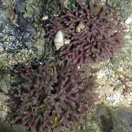
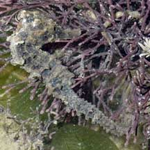
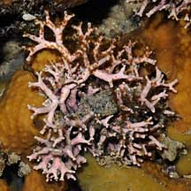
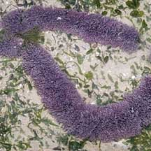
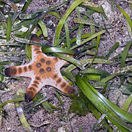
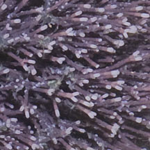
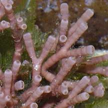
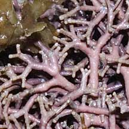

|
|
|
red
seaweeds text index
| photo index
|
| Seaweeds > Division Rhodophyta |
| Crunchy
pom-pom red seaweed awaiting identification* updated Jan 13 Where seen? These crunchy pinkish ball-shaped 'pom-pom's are sometimes seen in on all our shores on coral rubble as well as among seagrasses. Features: A cluster (3-8cm) of many thin, stiff, cylindrical 'stems' that are branched. Clusters usually bushy, pom-pom shaped although some hug the hard surface forming layers of branching shapes. The seaweed incorporates calcium carbonate making the 'stems' hard and brittle. So the seaweeds crunch when stepped upon (but try to NOT to step on them). Colours range from pinkish and lilac to deep magenta and purple. There are many pinkish seaweeds with a pom pom shape that belong to Family Corallinaceae or Family Galaxauraceae. They are often difficult to distinguish to species without microscopic examination. Cosy home: All kinds of tiny creatures are sometimes seen among the 'branches'. From small snails to tiny seahorses. Seastars, especially juveniles, are often abundant on 'meadows' of these crunchy seaweed. |
 Growing in clumps on coral rubble near reefs. Sisters Island, Feb 08  Tiny seahorse among the branches! Changi, Jul 06 |
|
 Growing among sponges on rocks. Sentosa, Sep 08 |
 Growing on an abandoned rope in seagrass meadows. Changi, May 11 |
 Loose tangles growing among seagrasses forming a crunchy carpet. Cyrene Reef, Apr 08 |
| Crunchy pom-pom red seaweeds on Singapore shores |
|
 |
 |
 |
|
'Stems'
short, slender
with white rounded 'caps' on the tips, forming a spherical bush or tangled carpet. |
'Stems'
short, thick
with darker pink dot at the tips, forming a spherical bush. |
Branched
along one plane forming
Y-shapes, with white squarish 'caps' on the tips. Grows flat against a hard surface, instead of forming a spherical bushy shape. |
Links
References
|
|
|